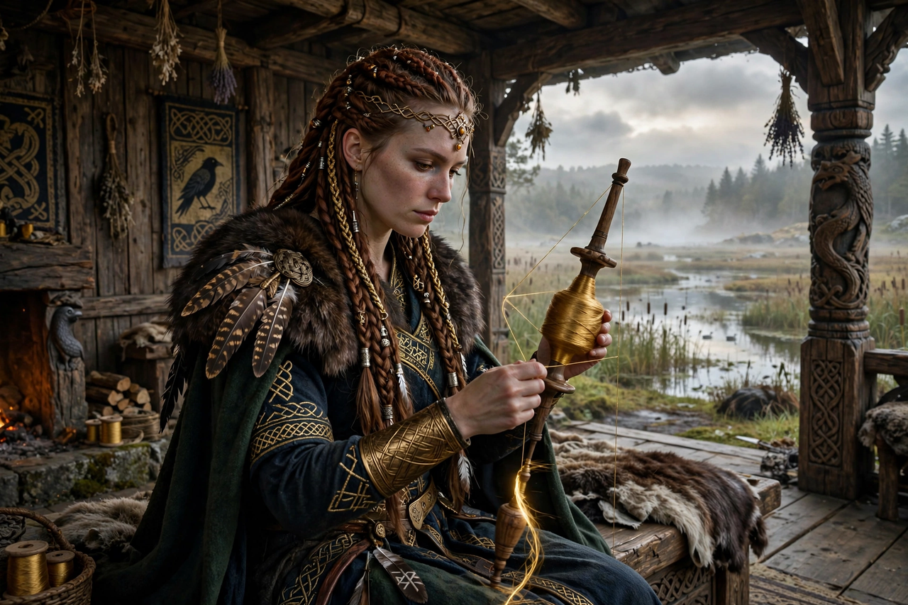

From Wikipedia, the free encyclopedia
| Frigg | |
|---|---|
| Affiliation | Æsir; queen of Asgard, goddess of marriage and foresight |
| Spouse | Odin |
| Children | Baldr (and, in some accounts, Höðr) |
| Hall | Fensalir |
| Attributes | Knows all fates but tells few; spinning; mistletoe oath |

Frigg (Old Norse Frigg, sometimes anglicised Frigga) is the foremost goddess of the Æsir in Norse mythology, wife of Odin and queen of Asgard, associated with marriage, motherhood, the household and a foresight that rivals her husband's: the sources say she knows all destinies, though she reveals few. Her hall is Fensalir, "the Fen Halls". She is the mother of Baldr, and her desperate, nearly successful attempt to save him is the emotional heart of his myth.
When Baldr dreamed his death, Frigg travelled the world exacting oaths from all things — every metal, stone, plant, animal and disease — that they would not harm her son; only the mistletoe, seemingly too slight, was passed over. Loki found the omission and guided the blind Höðr's fatal throw. Frigg's grief, and her plea that someone ride to Hel to ransom Baldr, set Hermod's journey in motion; the ransom failed by a single refusal to weep — Loki's, in disguise. In the eddic poem Baldrs draumar and in Snorri's account alike, Frigg's foresight avails nothing against the fate she can see but not speak.
Frigg's relation to Freyja is a long-standing scholarly puzzle: both are chief goddesses with falcon-feather associations, both have husbands (Odin / Óðr) whose names and absences resemble each other, and some scholars — following a hypothesis with roots in the nineteenth century — argue they descend from a single earlier goddess, while others maintain the sources keep them distinct. The continental Germanic Frija and the Old English Frig stand behind the name of Friday in the Germanic languages ("Frigg's day" or "Freyja's day" — the sources permit both derivations).
In Grímnismál Frigg wagers with Odin over their foster-sons and outmanoeuvres him; in the euhemerised histories she appears as a queen beside Odin. Her handmaidens — Fulla, Gná, Hlín and others — are sometimes read as aspects of Frigg herself. Spinning and the distaff attach to her in later folklore, and the constellation Orion's Belt was called "Frigg's distaff" in parts of Scandinavia.
Norse mythology · Baldr · Odin · Freyja · Loki